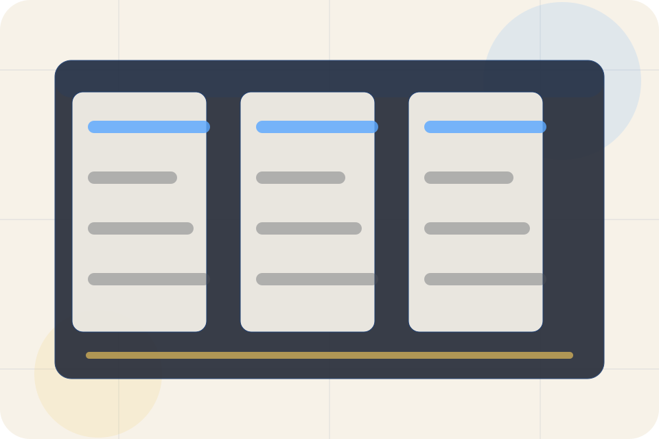

Before
The uncertainty, delay, or missed opportunity visitors bring into types.
Cases / 01
Cases opens as a clear legal decision hub: what Legal offers, who it helps, why it matters, and which route to take first.
The first screen combines positioning, proof, primary action, and fast internal navigation, so people can act immediately or compare the rest of the cases route with context.
Blue legal software hero
Select the closest route and Legal keeps the next step, proof, and follow-up expectation aligned with privacy and legal certainty.

Cases / 02
Types shows what changes after the work: clearer decisions, visible progress, and proof points that connect the offer to real outcomes.
The layout connects before-and-after thinking with measured outcomes, making the result easy to scan without promising what the business cannot guarantee.
Explore CasesThe uncertainty, delay, or missed opportunity visitors bring into types.
The clearer, safer, or more valuable state Legal is designed to support.
The visible cue that connects types to a believable decision, not a loose claim.
Cases / 03
Individuals shows what changes after the work: clearer decisions, visible progress, and proof points that connect the offer to real outcomes.
The layout connects before-and-after thinking with measured outcomes, making the result easy to scan without promising what the business cannot guarantee.
Explore CasesThe uncertainty, delay, or missed opportunity visitors bring into individuals.
The clearer, safer, or more valuable state Legal is designed to support.
The visible cue that connects individuals to a believable decision, not a loose claim.
Cases / 04
Families shows what changes after the work: clearer decisions, visible progress, and proof points that connect the offer to real outcomes.
The layout connects before-and-after thinking with measured outcomes, making the result easy to scan without promising what the business cannot guarantee.
Explore CasesLegal structures families around before, after, and a clear next route so visitors can compare the block quickly before they book a consultation.
Book ConsultationCases / 05
Companies shows what changes after the work: clearer decisions, visible progress, and proof points that connect the offer to real outcomes.
The layout connects before-and-after thinking with measured outcomes, making the result easy to scan without promising what the business cannot guarantee.
Explore CasesThe uncertainty, delay, or missed opportunity visitors bring into companies.
The clearer, safer, or more valuable state Legal is designed to support.
The visible cue that connects companies to a believable decision, not a loose claim.
Cases / 06
Documents shows what changes after the work: clearer decisions, visible progress, and proof points that connect the offer to real outcomes.
The layout connects before-and-after thinking with measured outcomes, making the result easy to scan without promising what the business cannot guarantee.
Explore CasesThe uncertainty, delay, or missed opportunity visitors bring into documents.
Cases / 07
Requirements shows what changes after the work: clearer decisions, visible progress, and proof points that connect the offer to real outcomes.
The layout connects before-and-after thinking with measured outcomes, making the result easy to scan without promising what the business cannot guarantee.
Explore CasesThe uncertainty, delay, or missed opportunity visitors bring into requirements.
The clearer, safer, or more valuable state Legal is designed to support.
The visible cue that connects requirements to a believable decision, not a loose claim.
Cases / 08
Timelines explains the operating sequence so visitors can see how the first request becomes a clear recommendation and follow-up.
The steps are written from the visitor side: what they do first, what Legal clarifies, what they receive, and how support continues.
Explore CasesHow visitors begin this route and what detail is useful at the first step.
What Legal reviews, filters, or explains before recommending the next move.
What the visitor receives afterward, including support, proof, or a handoff to the next page.
Cases / 09
Risks frames the pressure behind the visit, then connects it to a practical path visitors can recognise and act on.
The copy avoids blame and panic. It shows the common friction, the practical consequence, and the calmer route Legal uses to move people forward.
Explore CasesRisks names the real friction visitors bring to the cases route, so the page feels relevant before any claim is made.
The copy connects that friction to practical risk, delay, confusion, or missed opportunity without exaggerating it.
The final cue moves visitors toward a clearer route instead of leaving them with the problem alone.
Cases / 10
Legal closes the cases route with a clear action, a quick reminder of the value, and a low-friction way to book a consultation.
Visitors who are ready can use the primary action. Visitors who are still comparing can scan the section links, proof, and support routes before they book a consultation.
Book ConsultationThe final block keeps the choice simple: act now, compare one more proof route, or send enough detail for a focused response.
Book Consultationprivacy and legal certainty
A law-practice platform site with blue navigation, document panels, workflow cards, and consultation routing. Cases ends with a direct path to book a consultation, plus enough context for visitors who still need to compare.
Legal and immigration information is general and does not create a lawyer-client relationship until formally engaged.